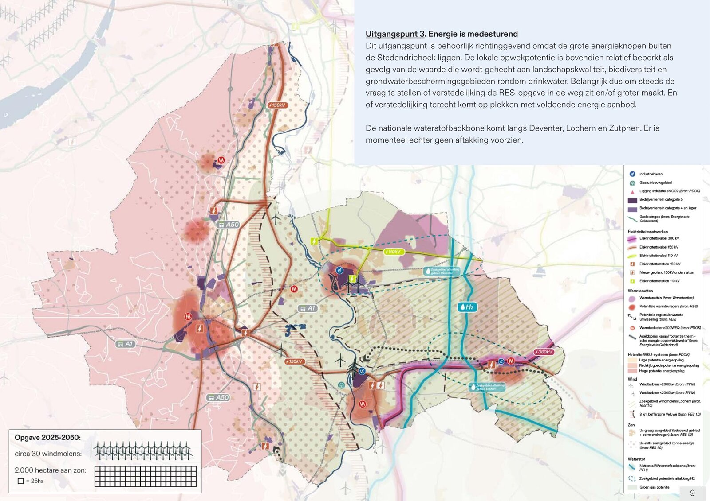
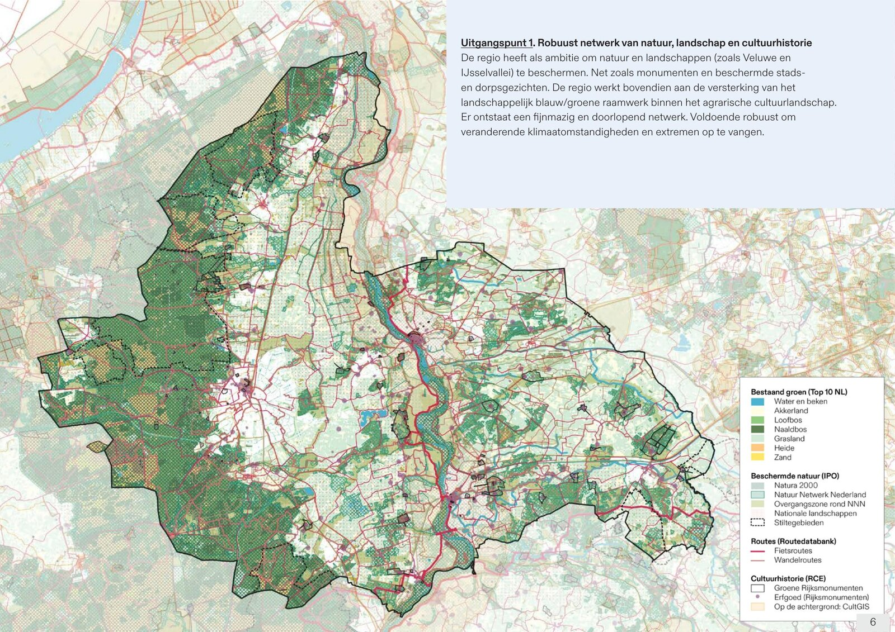
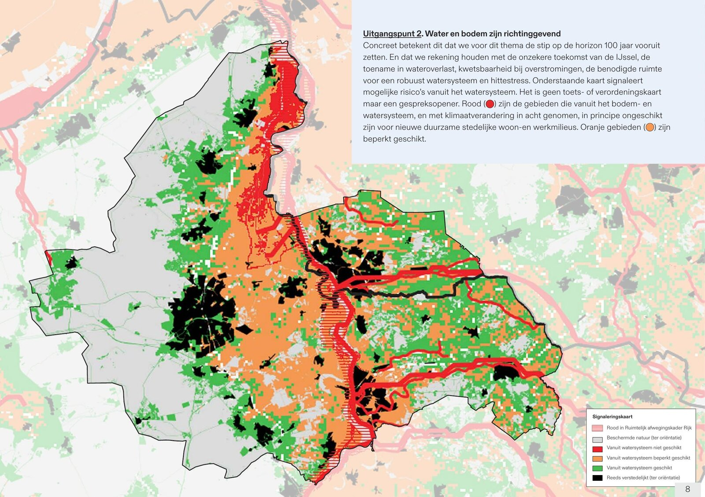
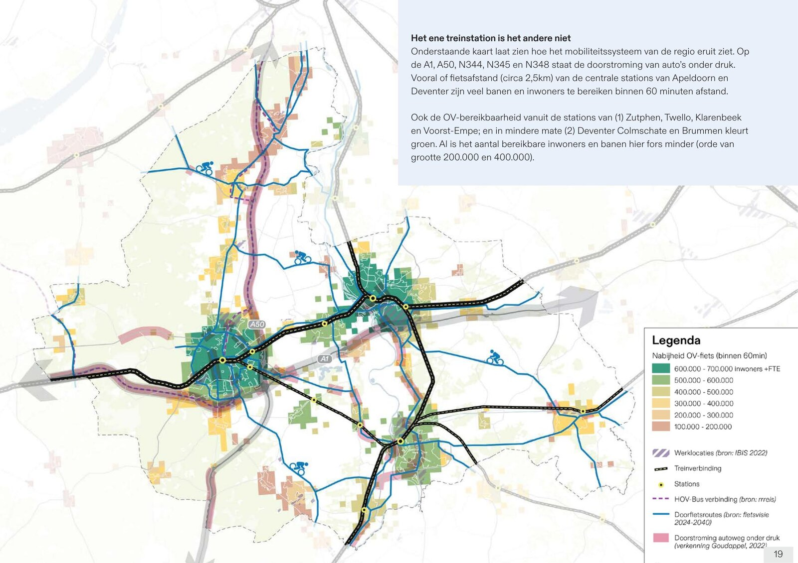
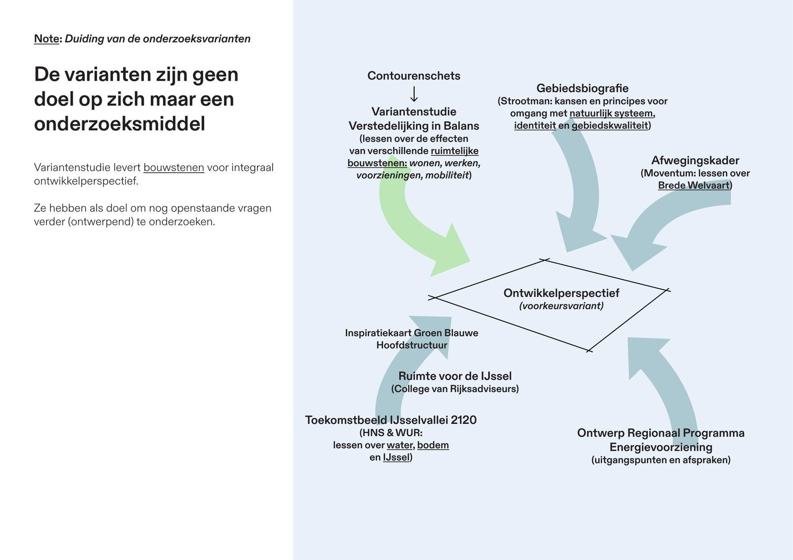
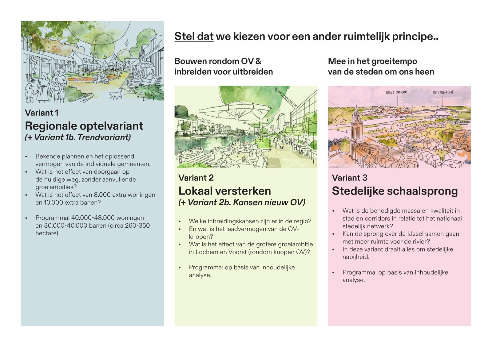

Four maps that set the ground rules for how the Stedendriehoek should grow.

The Stedendriehoek — Apeldoorn, Deventer and Zutphen — needs room to keep growing, but housing, jobs, water, energy and landscape all compete for the same land. As part of the joint 'Verstedelijking in Balans' programme, Studio Bereikbaar helped the three municipalities, the province and other partners test how the region could grow. The result is a variantenstudie weighing four scenarios, from carrying on with current plans to a more compact and greener region, faster growth, or a bigger leap along the IJssel.
Four themes set the ground rules for where that growth can and can't go: the region's landscape, nature and cultural history; water and soil, especially around the unpredictable IJssel; the region's limited capacity to generate its own energy; and how well jobs and homes stay reachable by bike and public transport. Together they formed the shared starting point for the whole study.
I combined GIS research with desk research to map four themes across Apeldoorn, Deventer and Zutphen: landscape and cultural history, water and soil, energy, and mobility. Stakeholders used these maps in the participation sessions to weigh the region's strengths and weaknesses and debate where it should grow.




